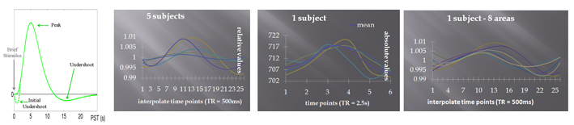
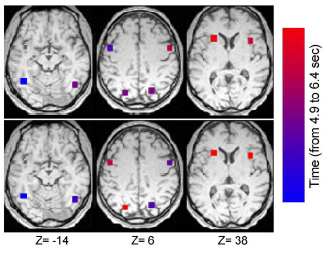
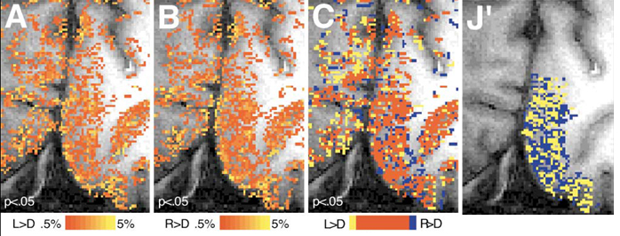
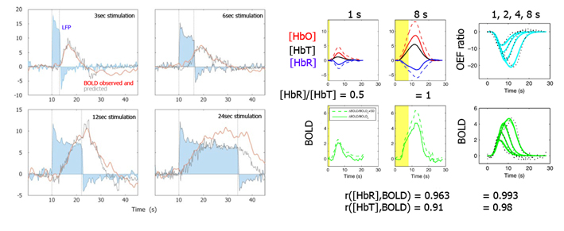
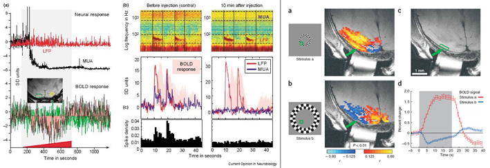
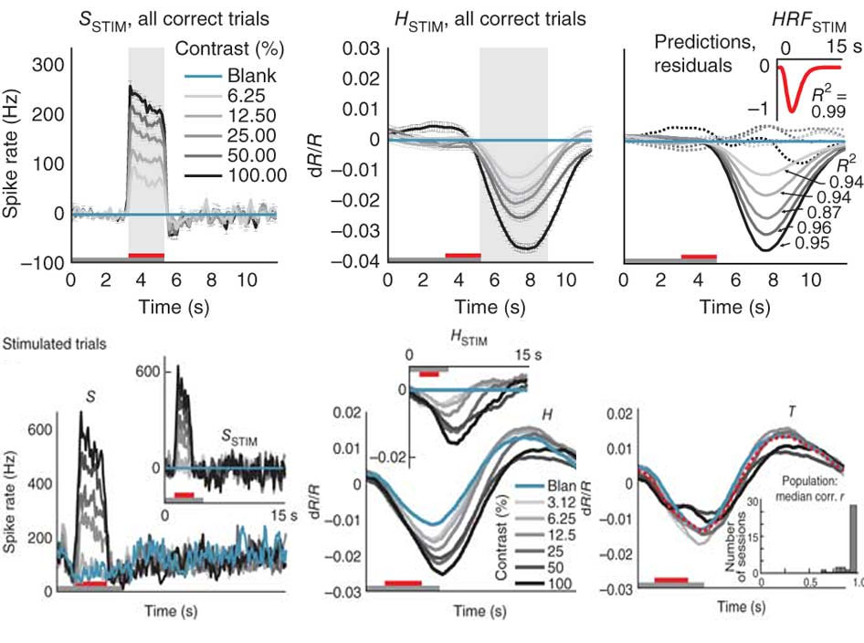

fMRI BOLD
Origins of the BOLD signal
During information processing, there is an increase of neuronal activity in different parts of the brain. This increase in neuronal activity elicits an increase in oxygen and glucose consumption supplied by the vascular system. The MRI signal measured in functional imaging is usually a signal that measures changes in the microvasculature oxygenation. More precisely, it deals with venous oxygenation (oxygenation in arteries is always 90-100%). The relationship between venous oxygenation and the MR signal strength corresponds to images called Blood Oxygenation Level Dependent (BOLD) images.
In 1936, Linus Pauling discovered that the hemoglobin molecule has magnetic properties that differ depending upon whether or not it is bound to oxygen. The oxygenated hemoglobine (Hb) is diamagnetic as it has no unpaired electron and no magnetic moment. In contrast, the deoxyhemoglobin (dHd) is paramagnetic as it has unpaired electron and magnetic moment. Thus, because blood deoxygenation affects magnetic susceptibility, MR pulses used in fMRI should show more signal for blood with oxygen (Hd) and less signal for blood deoxygenated (dHb) - however we just saw that fMRI look at the venous system, i.e. where we have dHb – How can we have more signal? PET studies using H2O15* and FDG* have shown that the regional cerebral blood flow (rCBF) and the regional cerebral metabolic rate (rCMR) increase during activation phases (neuronal stimulation). However, rCBF and rCMR are not coupled. During activations, the rCMRO2 increase of 5% but the rCBF increase of 29% (Fox & Raichle, 1986). More recent works that kept animals in hyperoxic or hyperglycemic states demonstrated that that the rCBF increase is not triggered by local sensing of depleted nutrients (see e.g. Lindauer et al., 2010).
The hyper-perfusion of the local tissue (McIntyre, et al. 2003) is the basis of the BOLD contrast. At rest, the oxygen level is around 95% in the arterial system and around 60-80% in the venous system (Bandettini, 1999). During activation, the oxygen level increases up to 90% in the venous system and the Hb/dHb ratio increases. The relative decrease in dHb leads to a slower phase decoupling of protons’ spin, and thus a T2* increase relative to rest. The role of the hyperperfusion is still debated: high oxygenation might be required for waste removal and heat regulation (Yablonskiy et al. 2000), or to supply distale active cells (Devor et al. 2011); hight flow might also be needed to provide higher levels of glucose (Fox & Raichle 1986, Fox et al. 1988, Paulson et al. 2009).
Spatial and temporal characteristics
The BOLD signal increases about 2 sec after the neural activity; it then reaches a plateau at about 5 – 8 sec. It will plateau if the neural activity continues. Once the neural activity stops, the signal returns to baseline 8 to 11 sec later. Finally, a transient change referred to as the undershot can be observed. Maximal variance is observed between subjects and minimal variance between scans of the same subject (Aguirre et al., 1998). However, within subject variance increases when comparing several areas – i.e. the shape of the hemodynamic response is influenced by the vasculature and the task and these effects differ from one area to the other.
Between areas of a given subject, one can observe temporal differences that are believed to be the consequence of different spiking activity (Buckner 1998) – but it can also be simple vascular effects. Because within-subject variance is low at the peak of the hemodynamic response (50-100ms), differences between conditions can be detected. Using fMRI one can thus estimate the information flux across cerebral regions and between tasks (Pernet et al. 2004 – need to be an interaction).

From Pernet et al. 2004. The time to peak of the hrf varies between areas and conditions, such as one can observe a significant interaction. Only in this case neural differences between conditions can be inferred.
Considering that 80% of axons are local ones, vascular variations related to metabolic changes are believed to be close to the real neural activation sites. The spatial limit of the BOLD technique (not MRI technique) is currently around 4 mm (Ugurbil e al., 2003). High functional imaging resolution can however be achieved by increasing the field strength and using special coils/imaging technique. Hi-res fMRI (i.e. nominal voxel sizes < 2 mm3) promises to help bridge the gap between the macro- and the microview of brain function. At high field (>3T) and using parallel imaging (Ugurbil et al. 2003), hi-res fMRI is invading the submillimeter range. However, even very high resolution fMRI (0.47 x 0.47 x 3 mm at 4T here) does not achieve high resolution anatomy as for instance ocular dominance (0.5 to 1mm resolution). Only by using subtraction one can obtain such result (see Cheng et al., 2001). This is partly explained by the blurring coming from the BOLD signal, which originates from the capillaries.

BOLD Physiology
BOLD as a vascular response: a biomechanical model
The shape of the BOLD signal can be explained by the interplay between ‘neuronal’ oxygen consumption and blood flow.
A biomechanical model:
1. Initial undershoot = the neural oxygen consumption before any vascular response leads to a decrease of Hb (Yacoub et al, 1998), i.e. a decrease of the observed signal. At the onset of neural activity, dendrites rapidly consume O2 (increase of the Cerebral Metabolic Rate of O2 (CMRO2)- Kasischke et al, 2004), leading to a reduction in oxygen pressure (pO2 - Ances et al, 2001) and oxyhaemoglobin (Devor et al, 2005).
2. Vascular response per se = increase of the cerebral blood flow (CBF - more Hd supplied than consumed = increase of the signal). Villringer et al. (1994) showed that changes in the blood flow are not linked to capillaries recruitment but to an increase in blood cell velocity and/or capillaries dilatation. These elicit an increase of Hd.
3. Final undershoot = (hypothesis 1) an increased cerebral blood volume (CBV) due to differences between the active response of arteries (dilatation/constriction) and the passive venous response (Buxton et al. 1998, Mandeville et al., 1999a, 1999b, 2001).
Several studies showed that the CBF depends on the neural response, i.e. neural activity could directly influence smooth muscle contraction and thus the increase and undershoot of the BOLD signal (see e.g. Chen and Pike, 2009). Importantly, the final undershoot might not be fully related to changes in CBV. Changes in CBV were observed experimentally in rodents, most of the time under anesthesia and often using long-lasting blood-pool contrast agent - and these three factors are likely to make a diffeerence. Indeed, Frahm et al (2008) for instance (see also other references in there paper) showed that in humans there was no change in CBV. In this case 3. Final undershoot = (hypothesis 2) uncoupling between normal CBF (returned to baseline) and CMRO2 ; that is there is some metabolique activity taking place after the stimulus indiced neuronal activity.
BOLD as a neural response
The BOLD signal reflects the firing of neural populations such as a strong correlation exists between the BOLD amplitude and local field potentials data (Logothetis, 2001). This means that BOLD is more related to synaptic activity than neural activity per se (i.e. the interplay of EPSP and IPSP). The BOLD signal increases according to a compressive, nonlinear, saturating function of stimulus energy. Indeed, the neural response itself may depend nonlinearly on the stimulus energy and the BOLD signal then nonlinearly depends on the neural signal.
However, various studies have shown a relative good linear coupling between LFP and the BOLD signal. BOLD/NIRS recordings suggest a linear relation between absolute peak amplitudes of [HbT], [HbO] and [HbR]. However the variations of [HbT] and [HbR] did not respond linearly with the stimulus duration and the BOLD response showed an even more non linear response than the [HbT]. This suggests the existence of several mechanisms mediating the BOLD response which create the non linearity with at least a first non linearity between the neural response and the blood supply and a second non linearity during the oxygen consumption (oxygen extraction fraction).
On the left, correlation LFP/BOLD as a function of the stimulus duration (Logothetis and Wandell, 2004) and on the right Haemoglobin concentrations/BOLD as a function of stimulus duration (Toyoda et al., 2008).
Non-linearities
One strong non-linear response is observed for stimuli that are repeated for ISI below 4 sec (which is indeed used for adaptation design). It is important to appreciate this effect as design with short ISI will have more variable BOLD responses - in amplitude, lantency and duration (Zwart et al., 2009), which needs to be adressed using appropriate modelling.
Non-linearities, however, seems to be caused by 'large' vessels and Spin-Echo fMRI (suppress larger vessel BOLD) at hight field revealed a much more linear relationship between BOLD and stimulus repetition down to ISI of 1sec (Zhang et al. 2009).
Positive vs. Negative BOLD
The relationship between neural spiking and BOLD signal is not straightforward because it reflects synaptic activity, which means one cannot really say if the BOLD signal relates to a neural excitation or inhibition. Indeed, synaptic inhibition is likely to reflect positive BOLD (see Logothetis 2003) but negative BOLD seems to reflect neural decrease (Shmuel et al. 2006, Pasley et al., 2007). In addition, recent data (Lauritzen 2005) suggest that in conditions where mainly inhibitory circuits are involved, inhibition and negative bold response could be related. Current understanding is thus that synaptic activity related to excitatory (EPSP) and inhibitory (IPSP) potentials leads to observe a positive BOLD response; but a decrease in local neural activity (e.g. related to neighbouring increase of neural activity that locally inhibit neural spiking - see however Devor et al, 2005) leads to a negative BOLD response.

On the left Serotonin (5HT) is injected during 10min (red) during a visual stimulation. Soon after injection, the multiunit activity decreases (inhibition) but both LFP and BOLD are clearly above baseline (Logothetis 2003). On the right, BOLD signal measured according the the receptive field suggesting the negastive BOLD reflect neural decrease (Shmuel et al. 2006).
Contradictory results linking BOLD to neurons
Sirotin and Das (Nature 457, 475–479 (2009)) measured 1) blood volume and 2) blood oxygenation (optical imaging) and 3) electrophysiological activity in alert monkeys performing a fixation/relax task. The trick was that the monkeys fixated a point of light or relax according to the colour of the light but the imaged area was different from the one receiving light input, i.e. imaging result were task driven, not visually driven. Blood volume and oxygenation in V1 showed changes that followed the rhythm of the trial phases (the colour of the light point alternated at regular intervals) even though it was not in an area receiving the light input. The authors also found that the signals were directly linked to the timing of the task trials: changing the duration of the trials resulted in an equivalent change in the timing of the haemodynamic signal. (see however, Kleinschmidt Müller (NeuroImage 50, 622-625 (2010)). In another set of experiments, the same team (Cardoso et al., 2012 - Nature Neuroscience, 15(9), 1298-1306 ) showed that even for areas receiving light input, the BOLD response is not just a reflection of stimulus induced spiking activity. The BOLD response is better seen as a linear sum of stimulus induced spiking activity (~50% of the variance in their data) and a trial-related signal (anticipatory? – attention?), not related directly to the local spiking.

From Cardoso et al. (2012) - the top row shows the spiking activity (MUA) in one session, the BOLD signal and the difference between the predicted (spiking convolved by the hrf) and observed. The bottom row shows the spiking activity in another session with the evoked and trial-related signals.
Devor et al. (J. Neurosci. 28, 14347–14357 (2008)) measured 1) blood oxygenation (spectral imaging) 2) blood flow (laser speckle imaging) 3) metabolism (2-deoxyglucose labelling) and 4) electrophysiological activity of the somatosensory cortices of anaesthetized rats in response to forepaw stimulation. In the contralateral cortex, as expected, they observed increases in spiking activity, metabolism, blood oxygenation and blood flow. In the ipsilateral cortex, the picture was less clear with an increase in spiking activity and metabolism but a decrease in blood oxygenation and blood flow.
--> Can we still then relate BOLD and Neurons: Blood flow and oxygenation can be decoupled from glucose consumption and neuronal activity (energy consumption does not necessarily determine blood flow), but the reverse still holds, i.e. if we observe a significant BOLD signal, we can say they was neural activity. However, depending on the type of stimulus used, the signal might be anticipatory rather than responsive and well designed studies and analyses are therefore mandatory if one wants to understand / interpret those two types of activity. As discussed by Cardoso et al. (2012) analyses that remove effects of (blank) null trials or non specific form of global from local signal are not confounded by this trial-related signal, just as design that compares conditions within the same task structure or regress against a range of intensity (parametric designs).
The special case of the hippocampus
Several researchers have observed a dissociation between spiking activity, LFP and BOLD signal in the hippocampus. In addition, it is often the case that negative BOLD responses are observed in memory tasks when compared to baseline measurements. One possible explanation relies on the particular low capillary vasculature of this region such as neural activity leads to an increase in oxygen consumption beyond the blood flow supply (see Ekstrom 2009).
How is the BOLD response mediated?
The energy produced for the brain relies mainly on glucose oxidation. However there are evidences that the increase in blood flow that leads to the BOLD signal is not driven by the demand in oxygen. First, there are numerous evidence of a relationship between the amount of neural activity (LFP) and the BOLD signal. Second, decreasing the oxygen availability does not necessarily lead to an increase in blood flow (Mintun et al. 2001) or during long period of stimulation whereas the oxygen consumption increases; the blood flow doies not decrease (Mintun et al., 2002). Indeed, the initial dip of the BOLD, as presented earlier, represents an increase of oxygen extraction immediately following the neural activation. One question that thus needs to be addressed is how the vascular response is mediated from neurons to blood.
The Astrocyte-Neuron Lactate Shuttle hypothesis
The blood supply following neural activation doesn't come from the neurons themselves but regional changes in neural activity trigger localized alterations in cerebral blood flow through astrocyte activation (Zonta et al., 2003). One hypothesis is that accompanying the neural activity, the glycogen is transformed in glucose and degraded into pyruvate (glycolysis +2ATP). Whereas under resting activity the pyruvate is fully degraded (oxidative phosphorilation + 30ATP) it might be quickly degraded into lactate under activation, i.e. because the brain uses oxygen (glycolysis) and that glycolysis is almost twice faster than phosphorilation, lactate is accumulating. The lactate would then be the agent which elicits an increase in blood flow, but via the astrocytes (Astrocyte-Neuron Lactate Shuttle hypothesis (Pellerin & Magistretti, 1994: neural activity -> glutamate taken up by astrocytes via Na+ channels -> NA+/K+ pump -> ATP consumption -> glycolysis -> lactate -> oxidation by neural mitochondria).
According to this model, the glutamate is the trigger related to the neural activity. However, other agents than the glutamate should be involved ; e.g. Logothetis et al have shown a BOLD response with serotonin. Nevertheless, the glutamate/ astrocyte/ glycolysis coupling might explain a good proportion of the data. Indeed, extracellular recording and spectroscopy data (Hyder et al. 2001, Smith et al. 2002) have shown that oxygen consumption changes are proportional to changes in the amount of glutamate which correlates with the spiking frequency (80% of neurons are excitatory ones and 90% of them are glutamaergic). Rouach et al. (2008) showed that the supply of energetic metabolites involves groups of connected astrocytes to reach more efficiently and distally the sites of high neuronal demand. Gap junctions are directly involved in the metabolic supportive function of astrocytes by providing an activity-dependent intercellular pathway for glucose delivery from blood vessels to distal neurons.

Other agents mediating the vascular response
Most recent studies also point out a special role of calcium signalling from the astrocytes to control the vascular supply (Zonta et al., 2003). Glutamate uptake not only activate the Na+/K+ pump which ultimately leads to an increase in oxygen demand (see above) but it also elicits a raise of calcium ion (Ca2+) concentration in astrocytes, thereby generating arachidonic acid from membrane lipids. Interestingly, arachidonic acid can either dilate or constrict the blood arterioles to increase or decrease blood flow, respectively. Dilation follows the conversion of arachidonic acid to prostaglandin E2 and epoxygenase derivatives, which diffuse to the smooth-muscle cells encircling nearby arterioles and relax them. Constriction, by contrast, is caused by arachidonic acid itself diffusing to the smooth muscle, where its derivative 20-HETE causes arteriole constriction by increasing Ca2+ entry through voltage-gated channels. Grant et al. (2008) showed that the prevailing oxygen level is a key determinant of whether astrocytes increase or decrease blood flow. In response to periodic 10–20-Hz stimulation of the hippocampal CA3–CA1 pathway in conditions of high O2 concentration (95%) arterioles constricted (81.4 plus/minus 3.8%), whereas the same vessel in low O2 concentration (20%) dilated (107.6 plus/minus 0.7%) in response to the same stimulation. Lowering pO2 elevated anaerobic metabolism, increasing external lactate. The action of PGE2 terminated when prostaglandin transporters (PGTs) take up PGE2 by an exchange of intracellular lactate. Owing to the influence of a lactate concentration gradient on PGT efficacy, higher levels of extracellular lactate reduced PGT uptake of PGE2, thereby increasing the external PGE2 concentration resulting in vasodilatation. In addition, whereas adenosine (via adenosine A2A receptors) usually induces vasoconstriction, the low-O2 environment causes an elevation in extracellular adenosine which prevented astrocyte-mediated vasoconstriction. Overall, these results suggest that by lowering pO2, astrocyte-induced responses convert to vasodilatations from vasoconstrictions.